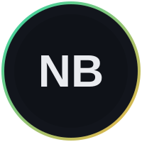

Bonjour, je suis
Nicolas Blin
Expert en Architecture SI & Cloud. Je conçois et déploie des infrastructures critiques — automatisées, hautement disponibles et sécurisées.
Profil & Philosophie
Architecte de solutions passionné par l'Open Source et le DevOps.
{
"nom": "Nicolas Blin",
"rôle": "Expert Architecture SI & Cloud",
"formation": "Mastère M1 · Ynov Campus",
"alternance": "Innosys — Expert Architecture SI",
"focus": ["Automation", "Cloud", "Security"],
"philosophie": "Infrastructure as Code",
"disponible": true
}
Projets Phares
Les réalisations les plus significatives de mon parcours professionnel et académique.
GridBook : Architecture Souveraine
Plateforme de pari full-stack auto-hébergée sur Proxmox. Sécurisation via Cloudflare Tunnel, backend FastAPI et gestion de flux temps réel.
Conteneurisation Multisites Web
Migration et industrialisation des sites clients vers une infrastructure Docker. Optimisation densité serveur et isolation applicative.
Déploiement OpenStack
Déploiement complet d'OpenStack via DevStack — Nova, Neutron, Swift, Cinder, Keystone configurés et documentés.
Architecture IoT & LoRa
Architecture IoT complète avec ESP32, protocole LoRa, MQTT broker et maison connectée — du capteur au cloud.
Expertises Métier
Un socle de compétences transverses, du réseau à l'infrastructure Cloud.
Réseau & Sécurité
Infrastructure
DevOps & Cloud
Monitoring
Systèmes & BDD
Web & Développement
Sauvegarde & PCA
Téléphonie IP
Outils & Technologies
Les technologies que j'utilise au quotidien.
Stack technique
Ils m'ont fait confiance
Expert Architecture SI
2025 – Présent · Alternance M1
Assistant de Proximité
2022 – 2025 · Alternance BUT
Prêt à sécuriser votre infrastructure ?
Je suis à l'écoute de nouveaux défis en architecture Cloud et SI.